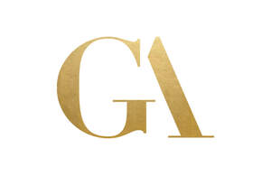

Trade Mark Journal No.2025/031 1 August 2025
UK00004237336 21 July 2025 (44)

- Class 44
- Hair salon services; Hair perming services; Hair braiding services; Hair styling services; Services for the care of the hair; Hair care services; Hair straightening services; Hair treatment services; Hair curling services; Hair tinting services; Hair dyeing services; Hair coloring services; Hair colouring services; Hair restoration services; Hair cutting services; Hair weaving services; Hair salon services for men; Hair salon services for children; Hair extension services; Hair salon services for women; Hair highlighting services; Services of a hair and beauty salon; Hair implantation services; Hair dressing salon services; Personal hair removal services; Laser hair removal services; Haircare services; Advisory services relating to hair care; Services for the care of the scalp; Hairdressing services; Skin care salon services; Make-up services; Waxing services for the removal of hair from the human body; Personal therapeutic services relating to hair regrowth; Trichology services; Cosmetic treatment services for the body, face and hair; Salon services (Hairdressing -); Hairdressing salon services; Consultation services relating to body hair removal; Body waxing services for hair removal in humans; Eyelash perming services; Beautician services; Beauty salon services; Salon services (Beauty -); Micropigmentation services; Facial treatment services; Beauticians (Services of -); Barber services; Services of a barber; Slimming salon services; Facial beauty treatment services; Eyebrow dyeing services; Nail salon services; Eyelash dyeing services; Services for the care of the skin; Tonsorial services; Manicure services; Pet beauty salon services; Hair treatment; Animal beautician services; Beauty treatment services; Permanent hair removal and reduction services; Beauty treatment services especially for eyelashes; Cosmetician services; Eyelash curling services; Make-up application services; Cosmetic make-up services; Pedicure services; Spray tanning salon services; Beauty consultation services; Manicuring services; Hair styling; Cosmetic facial and body treatment services; Beauty care services; Massage services; Airbrush tanning salon services; Permanent makeup services; Services for the care of the face; Spa services; Medical services for treatment of the skin; Animal grooming services; Cosmetic body care services; Eyelash tinting services; Nail care services; Consultation services relating to skin care; Beauty consultancy services; Cosmetic treatment for the hair; Dermatology services; Make-up consultation and application services; Pedicurist services; Sun tanning salon services; Eyebrow tinting services; Beauty therapy services; Consultation services in the field of make-up; Shampooing of the hair; Cosmetics consultancy services; Tattooing services; Beauty spa services; Microdermabrasion services; Lawn care services; Hair restoration.
Gennaro Dell'Aquila